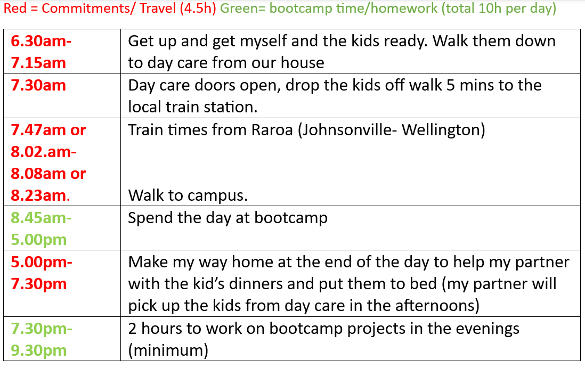

Welcome to my learning plan! In this blog I'll be sharing my thoughts on:
My potentional Career pathway for the next three Years.current date: 07/04/2023. This is not set in stone as Life can throw anything at you, good or bad and you never know whats round the corner! maybe different opatunities will arise that will change my career path. We will see!
My long term goals are something I have taken much consideration into account for As they are are not my goals alone but represent a prosperous future for me and my family
I would like my limitations of dyslexia to be over matched by my determination. Even if it means taking a deeper look at challenges, reading things twice over and using all my focus and experience from previous learning activities. In time I hope to have developed the skill to think logically as I continue to train my brain through learning.
This is one of the main reasons I chose Dev Academy as I feel it simulates how the industry works! Throughout my time I want to feel more and more comfortable with working with others on projects, being on group calls, presenting and discussing projects and just being in learning environment which I see as a warmup to the office environment. I have not worked in an office environment before, and it’s been 10 years since I have been in a classroom so I just want to become comfortable in a professional environment and my confidence to grow.
Throughout the programme I have already noticed the amazing positivity and sense of community from all on board from both teachers and students.
I am very grateful to be here and I will reflect that by giving my full attention, respect and kindness to all on the course including other learners, Facilitators and industry reps. From my experience: you get out what you put in so I would like to remain present and engaged throughout the course.
When things are building up and starting to get at me I feel its important to let my facilitator to know where and when I am struggling and work through it together rather then letting myself suffer on my own. I will always try to work it out on my own at first but if its been longer than 30 minuets and I am still stuck I will then ask for help or to be pointed in the right direction.
I understand the Facilitator team are not here to just give us the right answer and to move on as there is not much true learning in thate. I see them as mentors to help guide us towards the right answers and to help us think independently and to solve the problems on our own, teaching us to develop a logical approach to challenges.
I also see the facilitators there to help us if we have any non-technical issues and I’m happy to be honest and say if I’m having a bad day or this subject is really hard, it’s getting me down a bit. Even a brief human conversation can be the turning point and get the wheels rolling again in the right direction, so I’ll be happy to keep in communication with facilitators throughout the program about our wellbeing.
Regarding my personal schedule, I will be committed to dropping off my two children to day-care in the morning before study. Foundations Is not so bad right now, during the bootcamp I expect the mornings be rushed for the first few days or so getting used to it.
Please see below the template of my daily shedual during bootcamp. This is just the overview of my day. I will normally plan my day in more detail, including things like what my targets are and what i am to do for the day. This will be done the night before or first thing the morning of.
